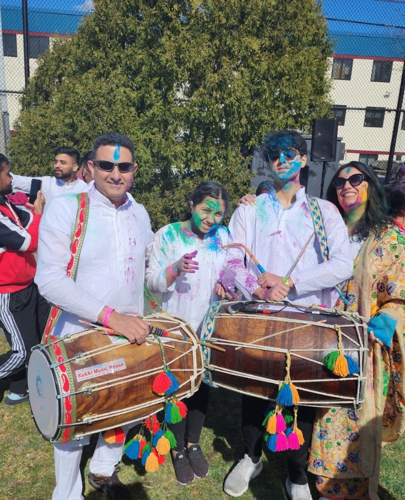

Dholi Beats
Professional Percussion Service
I founded a small entertainment Business where play Dhol at weddings,
gatherings, and formal events. I love the fact that I can get people dance to my beats and
become part of people's happy memories. When playing at events, the crowd and I feed off of
each other's energy to make everyone's experience more enjoyable.
Learning to play the dhol has deepened my understanding of rhythm and
helped me in my other forms of music as well. A large part of classical music is
improvisation and something that every musician must have is the ability to subconsciously
count beats. Playing drums has made this second nature to me and helped me tremendously to
gain a higher level of understanding of rhythms and it has aided me significantly in my
classical music.
My passion for playing the dhol has inspired me to initiate a project
focused specifically on this area. Typically, the captivating and enveloping sound of
percussion instruments is achieved by multiple instruments playing simultaneously. However,
since very few people pursue this instrument, having many dhols is not always possible. So,
to try and replicate the effect of multiple dhols, DJ's often held the microphone near the
dhol, spreading the localized sound to the entire hall. Yet, the sticks kept hitting the mic
ruining the signature sound of the dhol. This prompted me to find a solution to enhance the
sound of the dhol and spreading it to the entire hall. Since the only good solution required
me to drill a hole into the drum, compromising its structural integrity, I set off trying to
create my own. I am very close to a final product and have started using it for my gigs. See
my progress here!

View More →